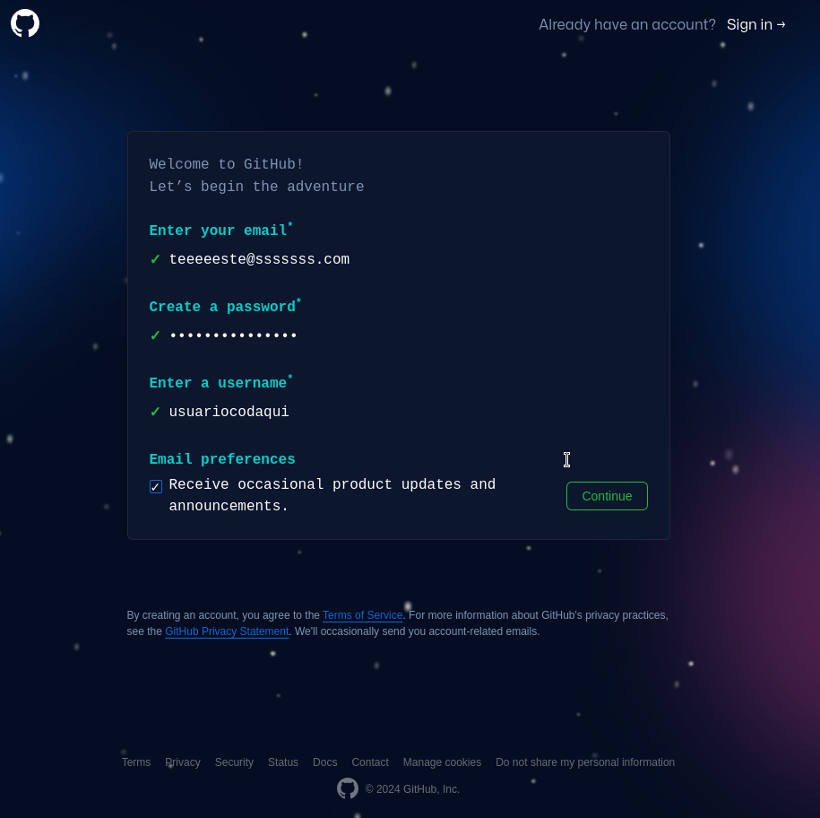
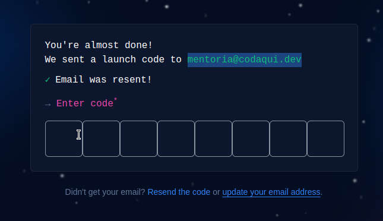

O objetivo deste curso é fornecer uma breve introdução ao GitHub. Também forneceremos materiais para aprendizado adicional e algumas ideias para você começar em nossa plataforma. 🚀
O Git é um Sistema de Controle de Versão (VCS) distribuído, o que significa que é uma ferramenta útil para rastrear facilmente alterações em seu código, colaborar e compartilhar. Com o Git, você pode rastrear as alterações feitas em seu projeto para que sempre tenha um registro do que trabalhou e possa reverter facilmente para uma versão mais antiga, se necessário. Também facilita o trabalho com outras pessoas - grupos de pessoas podem trabalhar juntos no mesmo projeto e mesclar suas alterações em uma fonte final!
O GitHub é uma maneira de usar o mesmo poder do Git online com uma interface fácil de usar. É usado em todo o mundo do software e além para colaborar e manter o histórico de projetos.
O GitHub é o lar de algumas das tecnologias mais avançadas do mundo. Esteja você visualizando dados ou criando um novo jogo, há toda uma comunidade e um conjunto de ferramentas no GitHub que podem levar você ao próximo passo. Este curso começa com o básico do GitHub, mas vamos nos aprofundar no resto mais tarde.
O fluxo do GitHub é um fluxo de trabalho leve que permite que você experimente e colabore em seus projetos com facilidade, sem o risco de perder seu trabalho anterior.
Um repositório é onde o trabalho do seu projeto acontece - pense nele como a pasta do seu projeto. Ele contém todos os arquivos do seu projeto e histórico de revisões. Você pode trabalhar em um repositório sozinho ou convidar outras pessoas para colaborar com você nesses arquivos.
Quando um repositório é criado com o GitHub, ele é armazenado remotamente na ☁️. Você pode clonar um repositório para criar uma cópia local em seu computador e usar o Git para sincronizar os dois. Isso torna mais fácil corrigir problemas, adicionar ou remover arquivos e enviar confirmações maiores. Você também pode usar a ferramenta de edição de sua escolha em vez da Interface de Usuário (UI) do GitHub. A clonagem de um repositório também baixa todos os dados do repositório que o GitHub possui naquele momento, incluindo todas as versões de cada arquivo e pasta do projeto! Isso pode ser útil se você experimentar seu projeto e perceber que gostou mais de uma versão anterior. Para saber mais sobre clonagem, leia "Clonar um repositório".
Committing e pushing são como você pode adicionar as alterações feitas em sua máquina local ao repositório remoto no GitHub. Dessa forma, seu instrutor e/ou colegas de equipe podem ver seu trabalho mais recente quando você estiver pronto para compartilhá-lo. Você pode fazer um commit quando tiver feito alterações em seu projeto que deseja "checkpoint." Você também pode adicionar uma mensagem de confirmação útil para lembrar a si mesmo ou a seus colegas de equipe o trabalho que você fez (por exemplo, "Adicionou um README com informações sobre nosso projeto").
Depois de ter um commit ou vários commits que você está pronto para adicionar ao seu repositório, você pode usar o comando push para adicionar essas alterações ao seu repositório remoto. Committing e pushing pode parecer novo no começo, mas prometemos que você se acostumará 🙂
Já mencionamos os repositórios, eles são onde o trabalho do seu projeto acontece, mas vamos falar um pouco mais sobre os detalhes deles! À medida que você trabalha mais no GitHub, você terá muitos repositórios que podem parecer confusos no início. Felizmente, seu "Painel do GitHub" ajuda a navegar facilmente para seus repositórios e ver informações úteis sobre eles. Certifique-se de estar logado para vê-lo!
Os repositórios também contêm READMEs. Você pode adicionar um arquivo README ao seu repositório para dizer a outras pessoas por que seu projeto é útil, o que elas podem fazer com seu projeto e como podem usá-lo. Estamos usando este README para comunicar como aprender Git e GitHub com você. 😄 Para saber mais sobre repositórios, leia "Criando, clonando e arquivando repositórios" e "Sobre os READMEs".
Você pode usar ramificações no GitHub para isolar o trabalho que ainda não deseja mesclar em seu projeto final. As ramificações permitem que você desenvolva recursos, corrija bugs ou experimente novas ideias com segurança em uma área contida do seu repositório. Normalmente, você pode criar uma nova ramificação a partir da ramificação padrão do seu repositório—main. Isso cria uma nova cópia de trabalho do seu repositório para você experimentar. Depois que suas novas alterações forem revisadas por um colega de equipe ou você estiver satisfeito com elas, você poderá mesclar suas alterações na ramificação padrão do seu repositório. Para saber mais sobre ramificação, leia "Sobre as Ramificações".
Um fork é outra maneira de copiar um repositório, mas geralmente é usado quando você deseja contribuir com o projeto de outra pessoa. Bifurcar um repositório permite que você experimente livremente as alterações sem afetar o projeto original e é muito popular ao contribuir para projetos de software de código aberto! Para saber mais sobre bifurcação, leia "Bifurcar um repositório"
Ao trabalhar com ramificações, você pode usar um pull request para informar a outras pessoas sobre as alterações que deseja fazer e solicitar feedback. Depois que uma solicitação pull for aberta, você poderá discutir e revisar as possíveis alterações com os colaboradores e adicionar mais alterações, se necessário. Você pode adicionar pessoas específicas como revisores de seu pull request, o que mostra que você deseja o feedback delas sobre suas alterações! Quando um pull request estiver pronto, ele poderá ser mesclado em sua ramificação principal. Para aprender mais sobre pull requests, leia "Sobre Pull Requests".
As issues são uma maneira de rastrear aprimoramentos, tarefas ou bugs para seu trabalho no GitHub. As issues são uma ótima maneira de acompanhar todas as tarefas nas quais você deseja trabalhar para seu projeto e informar aos outros no que você planeja trabalhar. Você também pode usar as issues para informar a um projeto de código aberto favorito sobre um bug que você encontrou ou um recurso que você acha que seria ótimo adicionar!
Para projetos maiores, você pode acompanhar muitas issues em um quadro de projeto. Os projetos do GitHub ajudam você a organizar e priorizar seu trabalho e você pode ler mais sobre eles neste documento "Sobre os quadros do projeto". Você provavelmente não precisará de um quadro de projeto para suas tarefas, mas depois de passar para projetos ainda maiores, eles são uma ótima maneira de organizar o trabalho de sua equipe! Você também pode vincular pull requests e issues para mostrar que uma correção está em andamento e fechar automaticamente a issue quando alguém mesclar o pull request. Para saber mais sobre issues e vinculá-las às seus pull requests, leia "Sobre Issues".
Sua página de perfil conta às pessoas a história do seu trabalho por meio dos repositórios nos quais você está interessado, as contribuições que você fez e as conversas que teve. Você também pode dar ao mundo uma visão única de quem você é com o seu perfil README. Você pode usar seu perfil para que futuros empregadores saibam tudo sobre você! Para saber mais sobre seu perfil de usuário e adicionar e atualizar seu perfil README, leia "Gerenciando seu perfil README".
Você já deve ter notado, mas pode adicionar um estilo divertido aos seus problemas, pull requests e arquivos. "Markdown" é uma maneira fácil de estilizar seus problemas, solicitações pull e arquivos com uma sintaxe simples. Isso pode ser útil para organizar suas informações e facilitar a leitura de outras pessoas. Você também pode colocar gifs e imagens para ajudar a transmitir seu ponto! Para saber mais sobre como usar o sabor de markdown do GitHub, leia "Sintaxe básica de escrita e formatação".
A comunidade do GitHub é vasta. Existem muitos tipos de pessoas que usam o GitHub em seu dia a dia - estudantes como você, desenvolvedores profissionais, amadores trabalhando em projetos de código aberto e exploradores que estão entrando no mundo do desenvolvimento de software por conta própria. Há muitas maneiras de interagir com a grande comunidade do GitHub, mas aqui estão três lugares onde você pode começar.
Se você achar um repositório interessante ou quiser acompanhá-lo, marque-o com uma estrela! Quando você marca um repositório com estrela, ele também é usado como um sinal para apresentar melhores recomendações em github.com/explore. Se você quiser voltar aos seus repositórios com estrela, pode fazê-lo através do seu perfil de usuário. Para saber mais sobre repositórios estrelados, leia "Salvando repositórios com estrelas".
Você pode seguir pessoas no GitHub para receber notificações sobre suas atividades e descobrir projetos em suas comunidades. Quando você segue um usuário, sua atividade pública no GitHub aparecerá em seu painel para que você possa ver todas as coisas legais em que ele está trabalhando. Para saber mais sobre como seguir usuários, leia "Seguindo pessoas".
O GitHub Explore é um ótimo lugar para fazer exatamente isso... explorar :smile: Você pode encontrar novos projetos, eventos e desenvolvedores para interagir.
Você pode conferir o site do GitHub Explore em github.com/explore. Quanto mais você interagir com o GitHub, mais personalizada será sua visualização do Explore.
README.md no seu repositório e conte o que você aprendeu com este curso, e também sobre as dúvidas que ainda ficaram. Experimente com estilos diferentes!seuusuario.github.io e esse repositório com um arquivo README.md vai se tornar um site em poucos minutos.seuusuario e esse repositório vai se tornar o seu Perfil do GitHub de maneira diferente.Acesse o site de registro clicando aqui., preencha os campos necessários e você vai ser capaz de criar a sua conta e utilizar no GitHub.

Será solicitado que você encontre um código no seu e-mail para confirmar a validade.

Edite o seu arquivo README.md e conte como foi sua experiência estudando com a Codaqui. Compartilhe no WhatsApp ou no nosso ambiente de discussões.
Esse material foi copiado do GitHub Starter e traduzido pelo LuizFernando-TC com o auxilio de ferramentas de tradução e conhecimentos do mesmo.